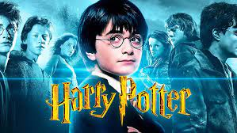

Preocupações Emergem em Relação aos Temas de "Harry Potter" Enquanto Debate Sobre Representação Ganha força
São Paulo, 9 de Agosto de 2023 A popular série de livros "Harry Potter" da autora J.K. Rowling está enfrentando um novo nível de escrutínio à medida que críticos e leitores exploram os temas e representações presentes na obra, levantando questões sobre a diversidade e inclusão.Enquanto a série tem sido amada por milhões de leitores em todo o mundo, críticos têm chamado a atenção para a falta de representação diversificada em termos de raça, gênero e orientação sexual. Muitos argumentam que os personagens e o mundo mágico de Rowling parecem ser predominantemente centrados em uma perspectiva eurocêntrica e heteronormativa, o que pode perpetuar estereótipos e marginalizar grupos sub-representados.
Além disso, a autora J.K. Rowling tem sido alvo de controvérsias devido a comentários públicos que alguns interpretaram como transfóbicos. Suas declarações sobre identidade de gênero levantaram preocupações sobre a mensagem que essas opiniões podem enviar para os leitores jovens, particularmente aqueles que são transgêneros ou questionam sua identidade de gênero.
As preocupações sobre representação e diversidade em "Harry Potter" vêm em um momento em que a sociedade está cada vez mais atenta à necessidade de inclusão e igualdade. Enquanto muitos defendem a série como uma história de fantasia que deve ser apreciada dentro de seu contexto, outros argumentam que a literatura deve refletir a diversidade do mundo real para garantir que todas as vozes sejam ouvidas e representadas.
Essas discussões têm provocado um reexame das obras de "Harry Potter", levando a uma variedade de respostas. Alguns fãs estão reavaliando suas visões sobre a série à luz dessas questões, enquanto outros acreditam que as preocupações estão exageradas e que a série deve ser apreciada por suas qualidades literárias e narrativas.
Independentemente da opinião individual, é inegável que "Harry Potter" continua a ser uma série de livros que gera debates e reflexões profundas. As discussões em torno da representação e dos temas presentes na série são um reflexo do papel que a literatura desempenha na sociedade, desafiando-nos a considerar a forma como as histórias podem influenciar nossa compreensão do mundo e das pessoas ao nosso redor.